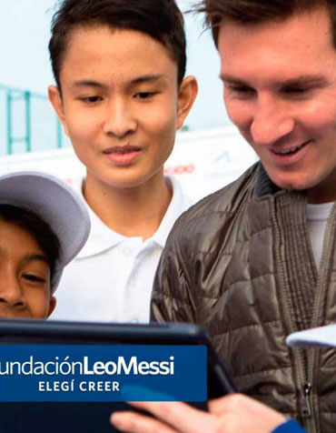
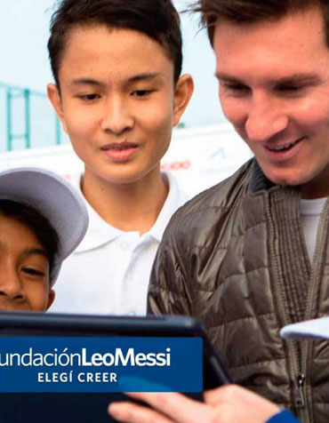

Projetos de Messi: Impacto Fora dos Campos
Lionel Messi, além de ser uma lenda do futebol, dedica boa parte de seu tempo a causas sociais. Seus projetos têm como objetivo melhorar a vida de crianças e famílias em situações de vulnerabilidade. Através de sua fundação, Messi tem proporcionado apoio educacional, nutricional e esportivo a jovens de diversas partes do mundo.
A Fundação Leo Messi
A Fundação Lionel Messi foi criada em 2007 com a missão de ajudar crianças em situações de vulnerabilidade social. Ela tem como objetivo promover o acesso à educação, saúde, esportes e nutrição. Messi, inspirado por sua própria infância difícil, busca proporcionar melhores oportunidades para as novas gerações.
 


Grandes Projetos e Iniciativas
Projeto Educacional em Rosario
Messi, juntamente com sua fundação, investiu em programas educacionais na cidade de Rosario, sua terra natal. O projeto visa ajudar crianças carentes a terem acesso a uma educação de qualidade e estimular o aprendizado através de atividades extracurriculares.
Projeto Nutricional na Argentina
Em parceria com diversas organizações, Messi criou um programa nutricional para combater a fome e a desnutrição infantil na Argentina. O projeto oferece refeições saudáveis para milhares de crianças em escolas públicas e abrange diversos bairros em situações de vulnerabilidade.
Messi e o Futebol Para Todos
Messi também promove o futebol como ferramenta de inclusão social, especialmente em comunidades de baixa renda. Ele realiza eventos e torneios em vários países, incentivando jovens a praticarem esportes e encontrarem no futebol uma oportunidade de crescimento e aprendizado.
Documentário sobre os Projetos de Messi
Assista ao vídeo abaixo para conhecer mais sobre os projetos de Messi e seu impacto positivo no mundo:
O Impacto de Messi no Mundo
Além dos projetos voltados à educação e ao esporte, Messi também é um defensor de causas ambientais e trabalha para promover a sustentabilidade. Ele tem parcerias com diversas organizações que atuam na preservação do meio ambiente e no combate à mudança climática.
5 Milhões de Crianças Beneficiadas
A fundação de Messi já ajudou mais de 5 milhões de crianças em situação de risco em várias partes do mundo.
100% das Doações Revertidas
Ao contrário de muitas outras fundações, Messi garante que 100% das doações recebidas sejam revertidas diretamente para os projetos de sua